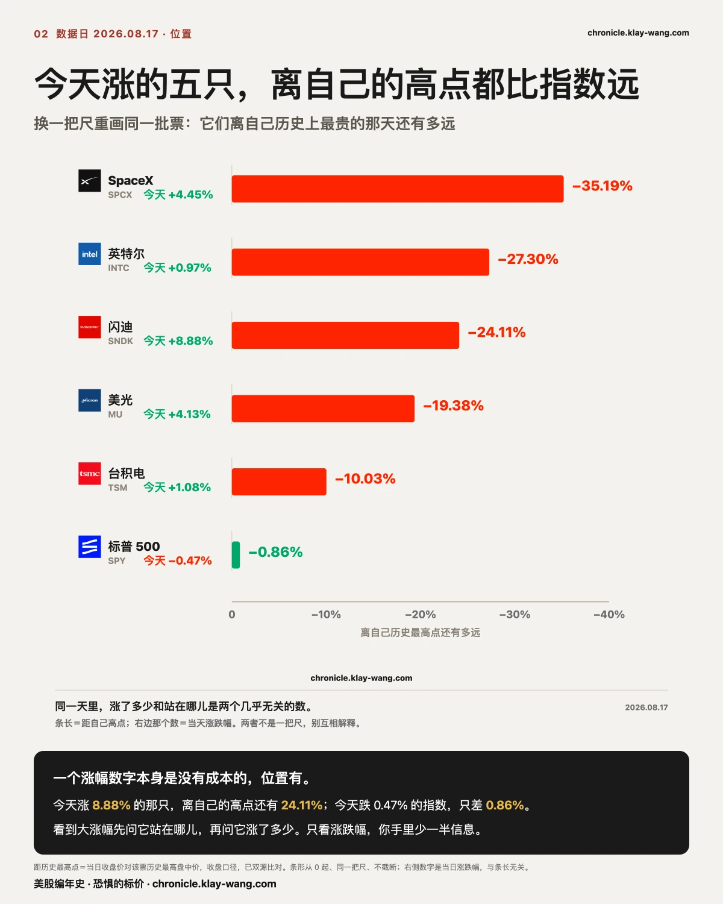
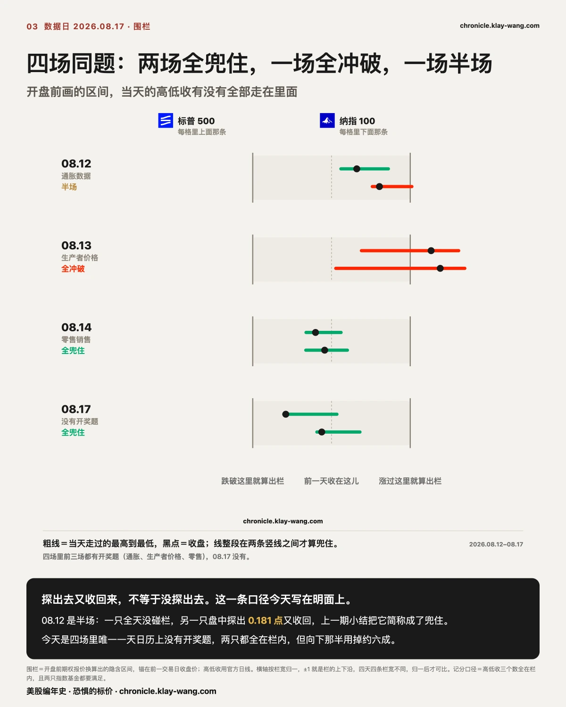
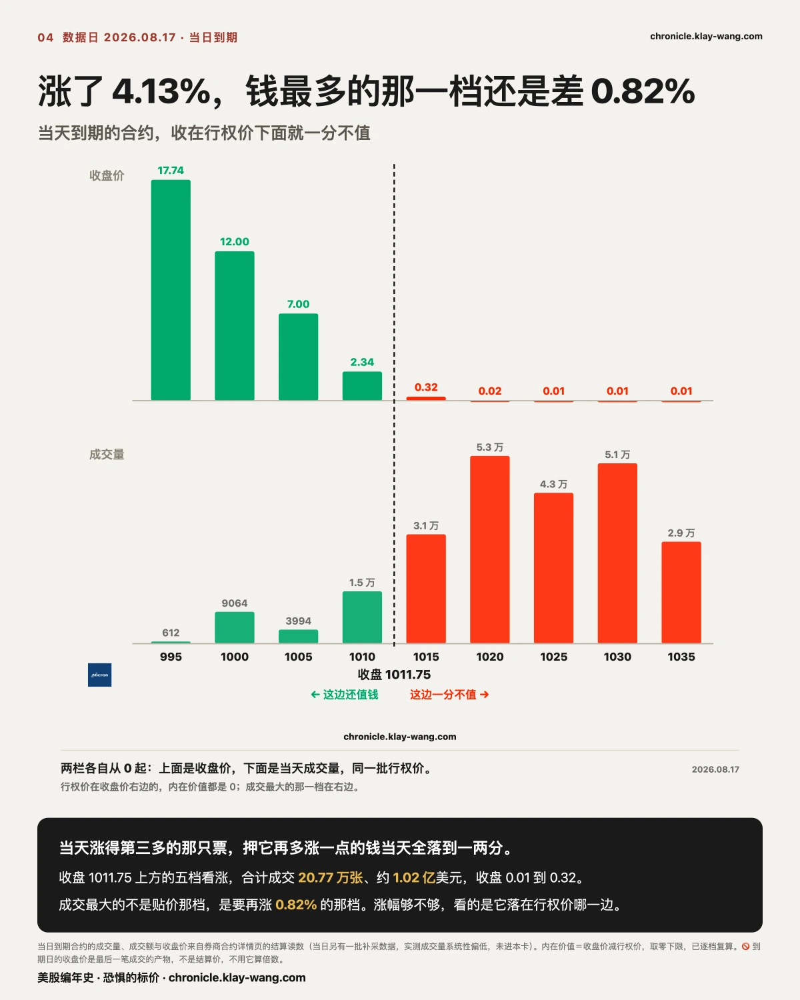
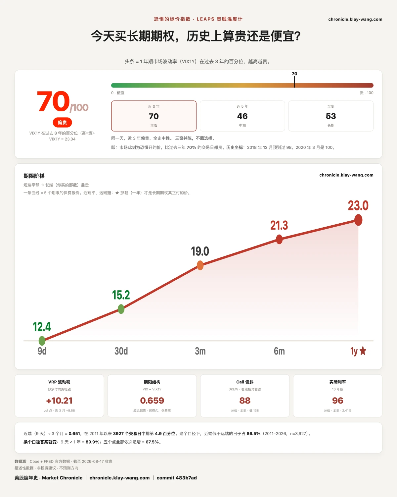

为什么七巨头全部收跌？而涨得最猛的是存储？ · 8.17-8.21
⚡ 三行速览
- 指数几乎原地不动，两只指数基金分别收跌 0.47% 与 0.16%；同一天，观察名单里最高的涨 8.88%、最低的跌 3.54%，两头摊开 12.42 个百分点。
- 涨的集中在存储与硬件，跌的集中在平台股，七巨头当天全部收跌；但涨得最猛的那两只，离自己的历史最高点还有两成到两成半。
- 保险回到上升方向：一年期的读数从 65.3 回到 69.7，从九天到一年五档全部比上一个交易日贵，与上周五的全线降价正好反过来。
这一期讲什么
第 1 节是主菜：一个指数读数接近于零的日子，里面到底发生了什么，以及为什么这两件事不矛盾。
第 2 节接着问一句更要紧的：涨得最猛的那几只，站在自己历史的什么位置。
第 3 节是围栏第四场，今天是四场里唯一一天日历上没有开奖题目。
第 4 节把上一节那把尺子落到一个当天到期的具体例子上。
第 5 节对账，把上两期公开挂出来的几条逐条给结果，包括两条今天取不到的。
第 6 节是温度计，外加一件必须提前说的事。不着急的话，读完第 1 节和第 6 节就有数了。

〔横截面〕指数没动，不代表那天什么都没发生
先把锚数放这里，免得后面越读越飘。
两只指数基金今天的收盘：一只 772.67，比上一个交易日的 776.34 低 0.47%；
另一只 729.87，比 731.07 低 0.16%。放进任何一张日线图里，这一天都长得像什么也没发生。
同一天，观察名单里那 17 只票是这样的：
最高的那只涨 8.88%，收 1786.85。
最低的那只跌 3.54%，收 568.97。
两头摊开 12.42 个百分点。 17 只里有 12 只收跌。
指数读数是这十几个百分点互相抵消之后剩下的净数。 它是一个真实的数字，
但它回答的是把所有东西按权重加起来还剩多少，不是今天发生了什么。
这两个问题在多数日子里答案接近，今天不接近。
具体的分布也不是随机的。涨的那一头是存储与硬件：
闪迪 8.88%、SpaceX 4.45%、美光 4.13%、台积电 1.08%、英特尔 0.97%。
跌的那一头是平台股：Meta 跌 3.54%、微软跌 3.04%。
七巨头今天七只全部收跌。
这句话是我们自己给这一期起的标题，现在我们自己把它拆开：
七只里有五只跌幅不到 1%（苹果 0.11%、英伟达 0.07%、亚马逊 0.51%、字母表 0.55%、特斯拉 0.87%），
真正在跌的只有两只，Meta 3.54% 和微软 3.04%，而这两只是平台股。
所以七只全部收跌是真的，但它不是一件事。 五只在噪音区，两只在下跌。
一个把噪音和下跌算成同一件事的标题，读起来吓人，读完什么也没告诉你。
我们的看法是：今天没有七巨头集体走弱这回事，只有两只平台股被卖了。
再往下拆一层，把一天拆成夜里和白天两段（夜里 ＝ 开盘价对上一个交易日收盘，白天 ＝ 收盘对开盘），
今天有三只走出了严格意义上的缺口，也就是当天的最低价高于上一个交易日的最高价，或者反过来：
- 闪迪：夜里 +3.63%，白天再 +5.06%，全天 +8.88%。夜里定了方向，白天继续往同一个方向走。
- 美光：夜里 +2.87%，白天 +1.22%，全天 +4.13%。同款，只是幅度小一半。
- 微软：夜里 -1.06%，白天再 -2.00%，全天 -3.04%。方向相反，形状一样。
三只都是延续型：夜里定了调，白天没有反悔。 这和 08.12 那天夜里定价白天反悔是相反的形状。
把一天拆成两段的意义就在这里，全天涨跌幅告诉你结果，两段告诉你这个结果是在谁看得见的时候形成的。
还有一件今天很少有人会去看的事。
当日到期的合约里，我们能取到结算读数的 13 只票，有 11 只当天最热闹的那一档是看跌，
而且 12 只的行权价都贴在收盘价上下 1% 以内（离得最远的苹果也只有 1.01%）。
散户对当天到期期权的印象是赌场，是一群人押方向。今天的数字说的不是这回事。
最大的那批钱不在赌涨跌，它们贴着现价，几乎没有时间价值可言。
我们的读法是：当日到期这一层，绝大部分成交量和方向无关。
把它当成散户赌场的人，看到的是最吵的那一小撮，不是最大的那一批。
这条可以被推翻：如果后面几个到期日里最热档系统性地偏离现价，那今天这个形状就只是一天的样子。
闪迪这一周的起点是它 08.13 那场投资者日，随后几家机构上调目标价；美光今天有评级与目标价的上调，
以及管理层关于供给偏紧还要持续多久的表述。
这两条新闻都不新鲜了，真正值得注意的是市场把它们定价在了什么时候。
闪迪和美光今天的涨幅都主要发生在开盘之前，白天只是没有反悔。
消息在夜里被消化完，价格在开盘那一刻就定死了。白天盯盘的人，看到的是一个已经结束的决定。

〔横截面 · 位置〕涨幅不带成本，位置带
上一节到此为止是今天发生了什么。这一节是这期里唯一一段你能直接拿去用在自己持仓上的东西。
一个涨幅数字本身是没有成本的。它测的是这一天走了多远，而不是这只票现在站在哪儿。
把同一批票换一把尺子重画，用收盘价对它自己的历史最高价，图就完全变了：
- 闪迪今天涨 8.88%，仍在自己历史最高点下方 24.11%（那个高点是 2354.39）。
- 美光今天涨 4.13%，仍在下方 19.38%（高点 1255.00）。
- SpaceX 今天涨 4.45%，仍在下方 35.19%。
- 英特尔今天涨 0.97%，仍在下方 27.30%。
- 台积电今天涨 1.08%，仍在下方 10.03%。
- 而今天跌了 0.47% 的那只指数基金，离自己的历史最高点只有 0.86%。
今天上涨的一共就是这五只，五只全都离自己的高点比指数远。 这句话不含任何方向判断，
它只是说：同一天里，今天涨了多少和现在站在哪儿是两个几乎无关的数。
这把尺子的用法很朴素。当你看到一只票单日大涨、并且想知道这个涨幅意味着什么的时候，
先问它离自己的高点还有多远，再问它今天涨了多少。 前一个数是位置，后一个数是变化。
位置是有成本的：一只离高点 24% 的票和一只离高点 0.86% 的票，即使今天涨幅相同，
它们各自需要发生的事情也完全不同。
我们的看法是：单日涨幅是这个市场里最容易拿到、也最不值钱的一个数。
它随处可见、人人都在报，正因为如此，它已经不含任何别人不知道的信息。
而这只票离自己的高点还有多远要多查一步，报的人少，含的信息反而多。
今天这五只上涨的票，每一只的位置都比它的涨幅更值得看一眼。

〔大盘 · 围栏〕第一次在没有题目的日子里量同一把尺子
每天开盘前，期权市场会给当天挂出一个隐含的波动区间，我们叫它围栏。
连续四个交易日，我们记同一件事：那天的高、低、收，有没有全部走在这个区间里面。
前三场都是开奖日：08.12 是通胀数据、08.13 是生产者价格数据、08.14 是零售销售数据。
08.17 不是。今天的日历上没有一线宏观数据。 所以这第四场问的其实不是同一道题：
前三场量的是围栏装不装得下一个已知事件，今天量的是没有事件的日子，围栏会不会天然宽松。
这个区别必须说明白，否则四场并排会被当成同一道题的第四次。
今天的围栏与结果：
- 第一只指数基金：区间 770.02 到 782.66，上下各 6.32 点，合 0.81%。
当天最高 776.78，最低 772.51，收 772.67。高低收全在栏内。 - 第二只：区间 721.36 到 740.78，上下各 9.71 点，合 1.33%。
当天最高 734.58，最低 729.27，收 729.87。同样全在栏内。
值得多看一眼的是它用掉了栏的哪一半。向上那半只用掉不到一成，向下那半用掉约六成。
围栏兜住了，但当天的活动明显偏在下沿那一侧。 这是一个形状，不是一个方向判断。
四场记分要写细一点，因为上一期我们把它压缩过一次。
按高低收三个数全部落在栏内这一条口径逐场核：
08.14 与 08.17 两场，两只指数基金都完全在栏内。
08.13 一场，两只都被冲破。
08.12 那一场是半个：标普那只全天没碰到栏，而纳指那只盘中最高把头探出栏外 0.181 点，收盘又回到栏内。
08.12 当期的原文写清楚了这 0.181 点，是后来 08.14 那期做小结时把它简称成了兜住。
所以四场的准确记分是：完全兜住两场，完全冲破一场，半场一场。
已经发出去的那句简称不回改，但口径从今天起写在明面上：探出去又收回来，不等于没探出去。
第四场和前三场不是同一道题：前三场有开奖，今天没有。而今天这道没题目的题，围栏用掉的是向下那半的六成、向上那半不到一成。
我们的读法是：真正被定价的从来不是会不会有事，是往哪边会有事。 今天没事发生，而钱仍然偏在下沿那一侧。
〔对账 · 字据〕上两期挂出来的，逐条给结果，包括取不到的
英伟达的翻转位：201.95。 08.13 是 202.93，08.14 是 203.78，今天 201.95。
我们挂的问题是它出不出 200 到 210 这个区间。答案是没有出，第三期继续挂着。
连续三期停在同一个区间里，这本身就是读数：这一档在 200 到 210 之间反复，说明市场对它的定价重心没有移动过。
真正值得等的是它离开这个区间的那一天，而不是它在区间里的第几天。
博通的期限倒挂：从 0.85 走宽到 1.38，而且不再只有它一只。
上一期挂的问题是 0.85 之后收敛还是走宽。答案是走宽，并且是这五个交易日里最宽的一次：
0.29、0.30、0.78、0.85，今天 1.38。读法很朴素，同一只票，一个月的波动率报价比一年的还贵。
通常一年期比一个月贵，因为时间越长不确定越多；反过来的时候，说明近端被单独加了价。
这只票已经连着两个交易日收跌（08.14 跌 5.94%，今天跌 0.14%），而近端的价一直没跟着松。
同时出现的新情况：倒挂的不再是一只，是两只。 08.14 那天 19 只里只有博通一只倒挂，
今天 SpaceX 也翻了过来，从 −3.23 变成 +0.66，一天挪了 3.89。
其余 17 只仍然是正常形状，一年比一个月贵，多数差在 4 到 9 之间。
倒挂这件事本身就是判断：市场愿意为最近一个月付比一整年更高的价，说明它认为近期的不确定比远期更值钱。
博通已经这样五天，一天比一天宽；SpaceX 是今天刚翻过来的。
我们倾向于认为这两件事不同源：博通的倒挂是在连跌两日中一路走宽的，是被下跌推出来的；
SpaceX 是在涨 4.45% 的当天翻过来的，同日还在三个期限上两边铺仓。
前者更像被动定价，后者更像主动布置。这条可以被推翻：如果 SpaceX 明天倒挂就收回去，那今天这次只是单点，不成立。
下面两条是今天取不到的，一条一条说清楚为什么取不到，不用旧数字顶替。
其一，三张远期价目表的持仓，今天没取到。 08.13 那期挂的问题是那三档在波动率回落的时候
守不守得住，对照基准是 08.14 早上坐实的那三个数。今天这三档的成交量掉回了我们扫表的门槛以下，
成交量不够就不进当天的表，于是它们的最新持仓这一天没有被记录下来。
这条顺延到下一期，判据一个字不改。
其二，闪迪那档 1600 看跌合约的持仓，同样没取到，同样是这个原因。
还有一条今天正式放弃。台积电那一档 560 看涨合约，08.06 当天成交 32276 张，
我们一直想拿到它第二天早上的结算持仓，挂了七天。今天确认这个数永久取不到了：
持仓数据只有当前值，没有历史查询，而那一档在 08.06 之后成交量掉回门槛以下、再没进过我们的表。
这不是遗漏，是过期。 凡是问第二天早上的持仓这类问题，答案只在当天和第二天存在，过期就永远拿不回来。

〔个股 · 当日到期〕涨了 4.13%，钱最多的那一档还是差 0.82%
上一节说涨幅不带成本。这一节是同一天里的一个具体例子，它把这句话落到一个能算的数上。
美光今天涨 4.13%，收 1011.75，是当天涨得第三多的票。它有一批合约在今天到期。
当天到期的合约只有一条规矩：收盘落在行权价哪一边，决定它还值不值钱。
先给锚数。收盘 1011.75 下方的看涨档，收盘时还有内在价值：
1000 那档收 12.00（其中 11.75 是内在价值），1010 那档收 2.34（内在 1.75）。
而收盘价上方的五档，内在价值全部为 0：1015 收 0.32，1020 收 0.02，
1025、1030、1035 各收 0.01。
这五档今天合计成交 20.77 万张，成交额约 1.02 亿美元。
真正值得看的是成交量落在哪儿。最热闹的一档不是贴着现价的那档，是 1020，
它一天成交 5.34 万张，比紧贴现价的 1010 那档还多三倍多。
1020 距离今天的收盘价 0.82%。也就是说，当天下注最集中的位置，
是美光今天再多涨 0.82%。它没有。
把这一节和上一节连起来读：一只票涨了 4.13%，在当天的涨幅榜上排第三，
听上去是个很大的数。但对这五档合约来说，4.13% 和 0% 的结果是一样的，
因为决定它们的不是涨了多少，是收在了行权价的哪一边。
这就是涨幅不带成本最直白的一个版本。涨幅是一个结果，
而这些合约是有人在开盘前就必须选定一个位置、并且为这个选择付过钱的意见。
两者不是同一种东西。

〔大盘 · 恐惧的标价〕65.3 之后：回涨，而且是四天里最高
上一期挂的问题是 65.3 之后接着往下还是回涨。今天的答案：回涨。
读数 69.7，上一个交易日 65.3，再往前 67.2 与 61.9。卡面记 70 / 100。
一年期波动率 23.04，比上一个交易日的 22.75 高了 0.29。
从最短端到一年，五档全部比上一个交易日贵了一点：
九天 12.39，一个月 15.19，三个月 19.04，六个月 21.33，一年 23.04。
这和上周五正好反过来。 上周五是数据大幅爆冷而指数纹丝不动，五档全线降价；
今天是指数几乎没动、内部却摊开 12 个百分点，五档全线涨回去。
两天放在一起读，能说的只有一句：为未来报价的那批人，今天要的价比上周五高。
恐惧的标价指数（Fear-Price Index）· 2026-08-17 · 读数 70/100：一年期波动率 VIX1Y 为 23.04，处于近三年第 70 百分位，高即贵。逐日台账与口径 → chronicle.klay-wang.com · 转载注明：恐惧的标价指数 · Market Chronicle
一件必须现在说、不能事后补的事
08.19 是波动率期货的换月日。 今天首月合约只剩两个交易日到期。
换月那天，这条曲线的形状会看起来变一下。那是因为算曲线用的合约换了一份，不是因为恐惧变了。
我们现在把这句话写在这里，是为了 08.19 之后不用回过头解释。
今天的曲线是升水的，最远月比首月高 44.6%，现货 15.19 还低于首月的 15.61。
这三个数你可以留着，换月之后拿它们对一下，看变的是形状还是只是合约。
今天值得带走的三句话
- 方向对了不算赢。 今天一只票涨 4.13%、一只跌 3.54%，赌它们再多走一点的钱都归零了，差的都不到 1 个百分点。
- 单日涨幅是这个市场里最容易拿到、也最不值钱的数。 先问它离自己的高点还有多远，再问它今天涨了多少。
- 指数不动的那天，保险照样在涨价。 等到真需要保护的那天才想起它的人，付的从来不是今天这个价。
预告与下一期回访
08.19 周三是波动率期货换月日，曲线形状那件事今天已经事先说明。
08.21 周五是月度到期日，本周记录在案的合约大多数在那天开奖：
谷歌两档看跌、SpaceX 十六个价位、美光看涨阶梯、闪迪 1600 上下两侧，逐案收卷。
08.18 周二 Reddit 正式进入标普 500，纳入公告日的跳空已经记下，生效日的跳空到时候并列。
下一期回来对四件：三张远期价目表的持仓（今天没取到，判据不改）；
闪迪 1600 那档的持仓（同上）；英伟达的翻转位出不出 200 到 210 这个区间（今天 201.95，第三期挂着）；
以及博通那道倒挂在 1.38 之后往哪儿走，还有刚翻过来的 SpaceX 是不是只待一天。
以及围栏第五场，注意 08.21 是月度到期日，那天的围栏和平常日子不是一把尺子。
本站不提供投资建议，不预测方向，不做择时。